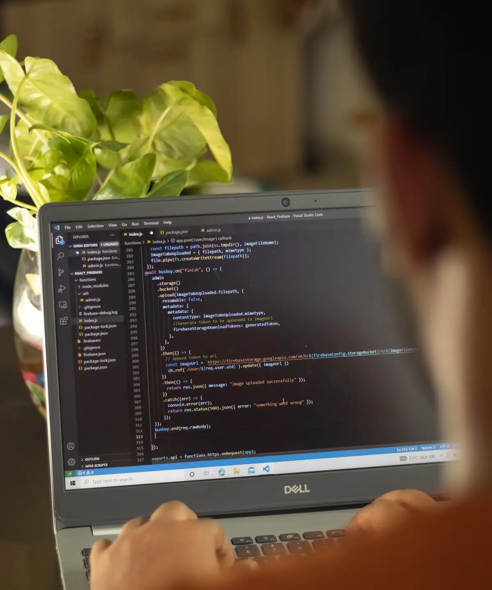

Especialidade em foco
Contabilidade digital para empresas que vivem em ritmo de produto.
Negócios de tecnologia precisam de uma rotina contábil que acompanhe mudanças rápidas, novos contratos e decisões constantes sobre crescimento.

Leitura contábil
Clareza para empresas digitais, startups e prestadores de serviços de tecnologia.
A Atlas organiza obrigações fiscais, regime tributário e informações financeiras para que a empresa tenha uma base mais previsível antes de tomar novas decisões.
O acompanhamento combina processos digitais com atendimento humano, ajudando o negócio a entender custos, impostos e próximos passos sem perder agilidade.
Gestão para escalar
Acompanhamento pensado para empresas em crescimento, startups e operações digitais.
Tributação inteligente
Apoio na escolha do regime tributário e no controle das obrigações fiscais do setor.
Processos digitais
Uma rotina mais integrada para quem precisa de resposta rápida e informação confiável.